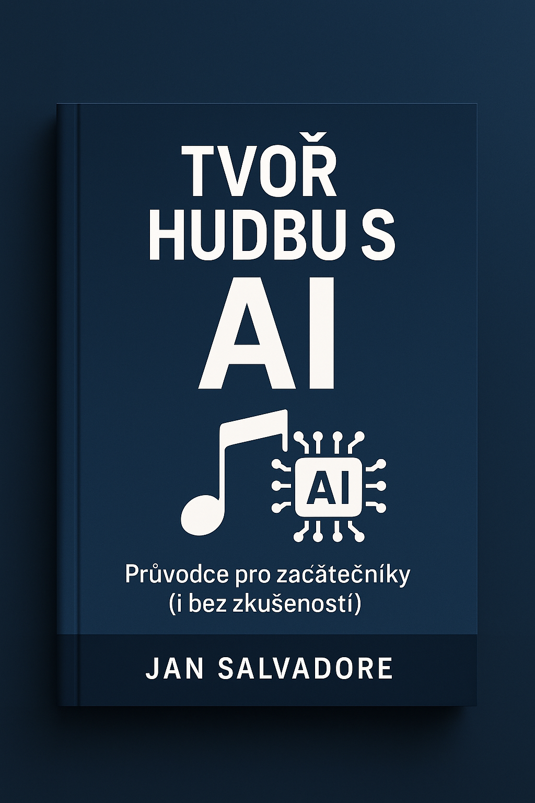

A beginner-friendly guide – no music theory needed
Explore the world of music creation powered by artificial intelligence. This free eBook will help you get started, shows you the best beginner tools, and guides you step by step – even if you've never composed before.
📥 Download the eBook (PDF) ☕ Support the authorMusicCraftAI Studio is a unique music tool under development, combining a digital audio workstation (DAW) with artificial intelligence. It’s designed for composers, producers, and even beginners who want to create music creatively and efficiently.
The project is an original creative work, and all included ideas, features, and concepts are protected under copyright law.
All content presented here, including the name MusicCraftAI Studio, is part of an original project. Any unauthorized copying or imitation is prohibited.
🌐 Visit MusicCraftAI Studio ☕ Support the development